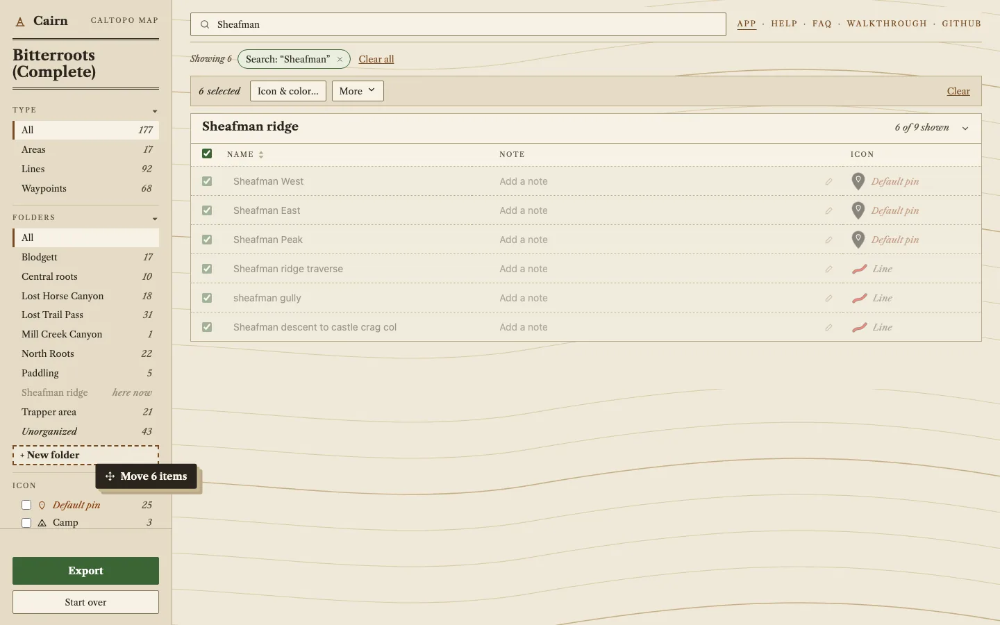
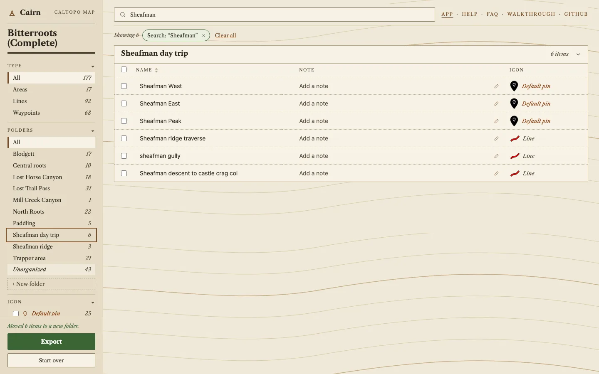
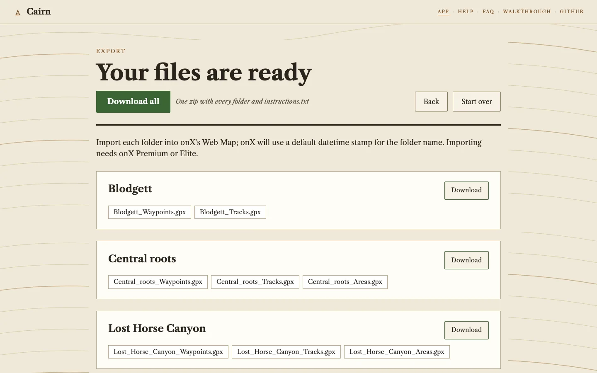

What Cairn changes between CalTopo and onX
An example migrating a detailed CalTopo map of the Bitterroots to onX (GeoJSON, KML, GPX)1
- 68waypoints that a plain CalTopo GPX or KML export would hand to onX with no icon
- 43of those get a specific onX icon from Cairn right away, across 12 different icons
- 25fall back to the default pin and are flagged for you to review
- 10CalTopo folders, each its own numbered import
What the plain export gives onX
onX imports only GPX and KML, and CalTopo's GPX and KML lose styles and folders. GeoJSON keeps everything, but onX can't open it. Cairn reads all three; GeoJSON keeps the most.
| Carried by | CalTopo GPX or KML, straight into onX | CalTopo GeoJSON, through Cairn |
|---|---|---|
| Names and coordinates | Yes | Yes |
| Marker icons | No | Mapped to onX's 95 icons |
| Colors | No | Snapped to onX's palette |
| Folders | No | One import each, with its name |
| Notes | GPX only; a KML import drops them | Written to the description field |
Export from CalTopo (GeoJSON is best) and add it to Cairn
One export, one file.

.json, .geojson, .kml or .gpx file.Your folders and icons survive the trip
The 10 folders are on the left with their counts, and every waypoint shows its onX icon name next to a drawing of the marker. Cairn matched 43 of the 68 waypoints to a specific icon, such as Parking (10), Climbing (9), Summit (6) and Shelter (4), from the CalTopo symbol or words in the name. Hover a marker to see why it was chosen.

25 waypoints need a decision
When the CalTopo symbol is a plain point and the name gives no clue, Cairn doesn't guess. It marks the
waypoint Default pin. Here that's 22 plain points ("El Capitan", "Talus field", "Bridge") and 3 flags
that Cairn's mapping sends to the default pin on purpose. Tick Default pin in the Icon list to
see only those.

One at a time, or many at once
Click a marker to change that item's icon and color: onX's 95 icons and 10 waypoint colors.

For a batch, search, tick the rows and choose Icon & color…. The dialog shows each item now and after. Here the three Sheafman ridge flags become Summits in one step, taking the map from 25 flagged waypoints to 22.

Sort items into folders
Each folder becomes one onX folder, so set them up here. Drag rows onto a folder in the Folders list; tick several first to move them together. Here the six Sheafman rows go onto + New folder.

Type the new folder's name and press Enter. Click a folder's name to rename it; a name that's taken offers to merge the two. More → Move to… does the same from the keyboard.

Ten imports, one per folder
onX makes one folder per import and names it by date, so Cairn gives you one set of files per folder: a box
with its name, its files and a Download button. Import each folder's files together, tick the new-folder box,
and rename the folder. instructions.txt in the zip says the same and lists every item. Lines go out
as GPX tracks, areas as onX areas in GPX.

onX imports everything as new
onX never updates existing markups. Every import adds new ones, so re-importing a map gives you duplicates. The FAQ has the details.
1 Original map: mt-adventures.blogspot.com / tenpeaksbeforelunch.com ↩